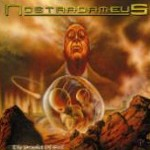

|
|
||
Nostradameus : The Prophet of Evil (2001) |
|

http://www.nostradameus.com |
1. The Prophet Of Evil 0:45 |
7.8/10 |
|
Los suecos Nostradameus vuelven a la carga con su segundo disco, The Prophet of Evil. Power metal de sonido bastante clásico, bien ejecutado, con una voz clara y potente, y bien producido (no en vano ha sido mezclado en los famosos estudios Finnvox en Helsinki bajo la dirección de Mikko Karmila). El álbum es conceptual, y trata sobre Hister, el profeta del mal, que intenta, con mentiras y engaños, dominar una tierra antaño feliz, asesinado a su rey. El hijo del rey tendrá que enfrentarse a él. Tras una corta introducción hablada, "The Prophet of Evil", surge "Hymn to Theese Lands": doble bombo, riffs cortantes, cambios de ritmo, coros y vertiginosos solos de guitarra. Auténtico power metal. La tercera canción, "Evil Prophecies", se mantiene en la misma línea que la anterior, aunque con un tono un poco más oscuro y coros quizás más espectaculares. "Murder" cambia un poco el ritmo y lleva una guitarra rítmica más ahogada y riffs más graves, que contrastan con los brillantes solos de guitarra. "Requiem" es una canción más lenta, llevada sobre las guitarras acústicas y los teclados, que por cierto brillan por su ausencia en casi todo el disco, a diferencia de en la mayoría de las bandas actuales. El sexto corte, "In Prison", acelera de nuevo el ritmo al principio, aunque hay varios cambios. Algunos riffs muy interesantes y un sonido bastante clásico en esta canción. "The Escape" sigue en la línea de las anteriores. Sonido clásico, algunas guitarras "galopantes" a lo Iron Maiden, y una interesante mezcla de voces y coros. "The Power's in Your Hand" no destaca especialmente, salvo por los coros, casi gritados al más puro estilo Manowar y un sonido que recuerda un poco a Iron Savior. "Gathering Resistance" es una canción ágil y con cambios de ritmo muy marcados. La décima pista, "The Final Battle" es un tema largo, épico, con diferentes partes para no hacerlo muy pesado y que condensa en cierta forma lo que es este disco, con sus cambios de ritmo, coros, riffs afilados y solos intrincados. Para terminar, "Scream of Anger" es un bonus track, aunque de calidad y estilo muy similar al resto del album. En resumen, casi nada malo se puede decir de este disco, salvo que no aporta nada nuevo al metal. Y eso, la verdad, tampoco es tan grave. |
||
Rubén Béjar |
||